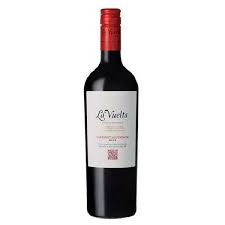
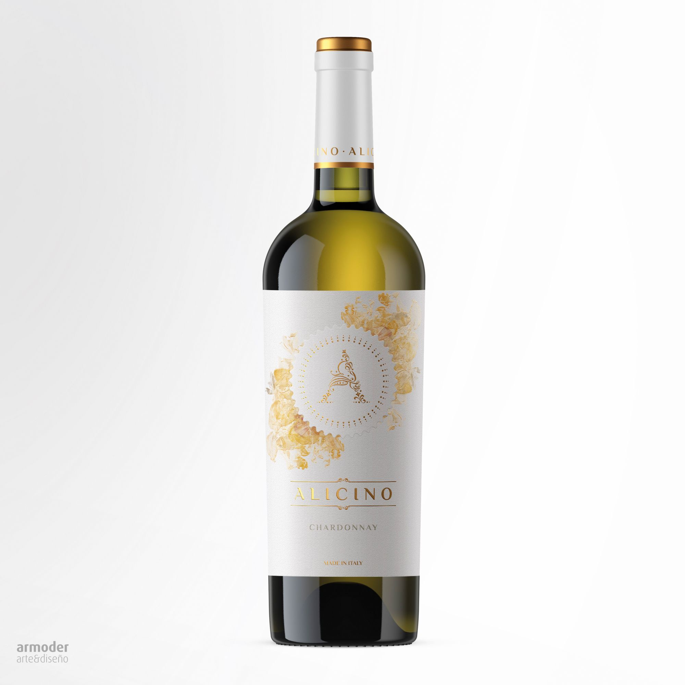
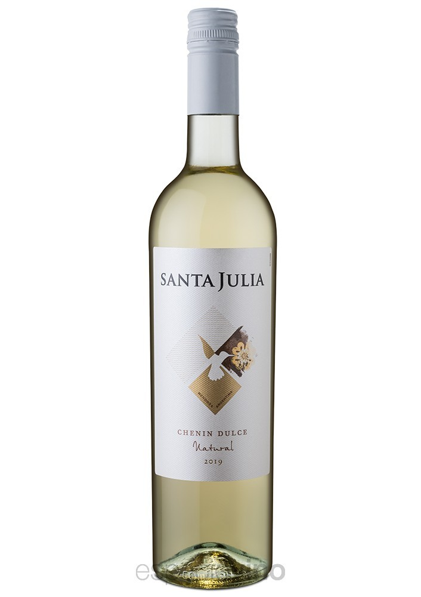
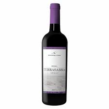
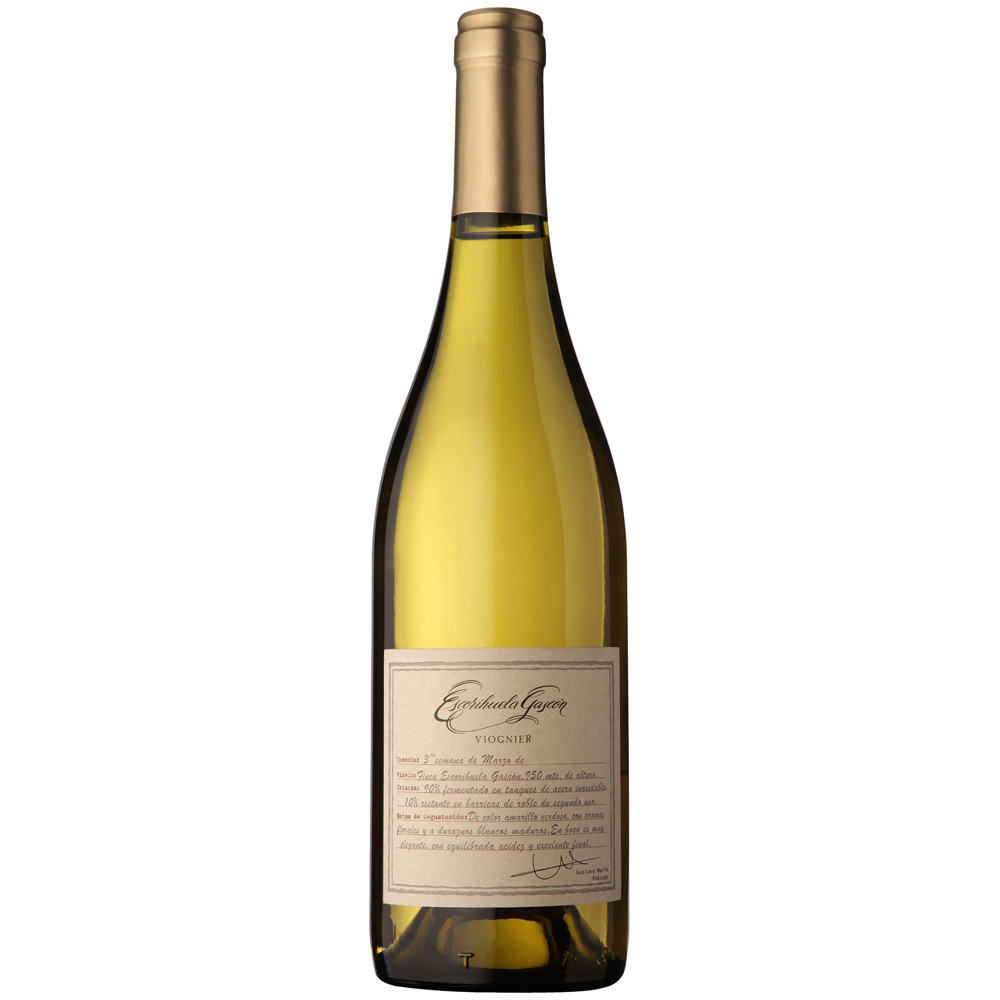
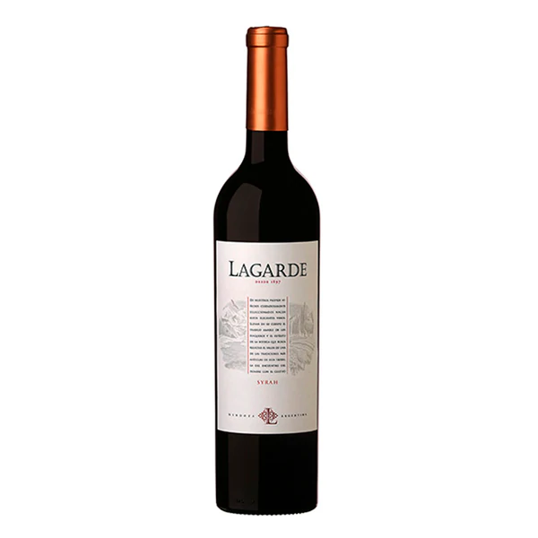
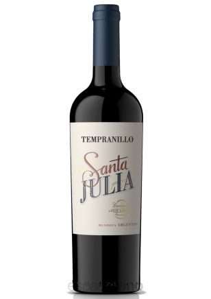
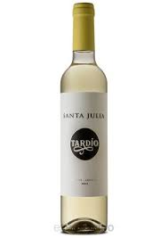
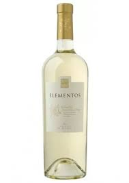

Un país vitivinícola
A lo largo de los 3.800 kilómetros de extensión de norte a sur, la superficie de viñedos en Argentina cubre 214.798 hectáreas (2020), de las cuales 197.965 corresponden a un abanico de variedades que dan origen a vinos de la más alta calidad enológica. Lo interesante es que la diversidad de terroirs imprime un carácter diferenciado y un perfil propio a cada variedad.¿Cómo se distribuye su superficie en función de cada una de las provincias vitivinícolas?
Viñedos en Argentina:
- 59% son variedades tintas
- 18% son variedades blancas
- 23% son variedades rosadas
VARIEDADES TINTO

VARIEDADES BLANCO

Cabernet francs

Cabernet

Chardon

Chenin

Pinot noir

Merlot
Suavignon blanc

Viognier

Syrah

Tempranillo

Tardio

Torrontes